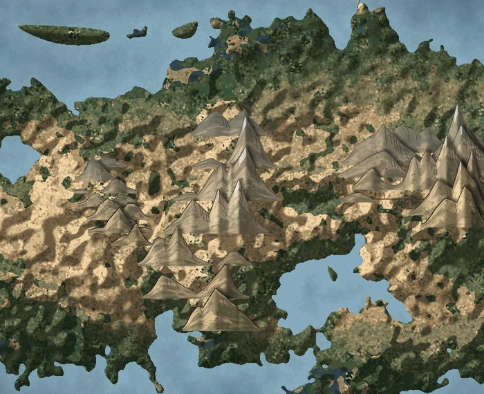

← 管理ページ / 高さから作る山の比較 / 段階9
山岳地帯だけに山を描く(段階12)
概要: ユーザー指示(2026-11-18)「最後の山の重なり(D)を実際の地図に書き込む。山の絵は、山のまとまった地域だけに描き、あとは普通の地図をそのまま使う」を試作しました。山岳地帯は3か所(陸の約9%)で、それ以外は元の地図のままです。
全体
 絵番号 E027
絵番号 E027山岳地帯の外は、段階5の地図そのままです。
山岳地帯の拡大

絵番号 E028作り方
- 山岳地帯を決める: 地図の高い所(標高の高い側の約3割)がまとまった場所だけを山岳地帯にします。小さな塊は除きます(山岳地帯3か所、面積は約2.1万・1.2万・0.3万画素)。
- 地帯ごとに重ねを作る: 地帯を南北に7枚の帯に分け、帯ごとに、その帯の高さ(地図の標高)から、Dの方式(丸い丘→尖った高峰)で稜線を作ります。高い帯ほど尖り、低い帯は丸くなります。
- 奥から手前へ重ねる: 奥の帯ほど薄く青みがかり、手前の帯が奥の帯に影を落とします。稜線の外側は、地帯の縁に向かってなだらかに低くして、地帯の外へ出さないようにしました。
- 下の絵と合わせる: 山の面は、段階9と同じく、下の地図の絵を縦に伸ばして貼り、山の色(4色)の明暗と半々に混ぜます。左上の光で左を明るく、右を暗くし、暗い面に細い線を足します。
限界・未確認
- 山の形は、地図の標高の山(頂点)の位置とは対応していません。標高からは「帯ごとの高さ」だけを使い、頂点の数・位置・幅は乱数です(ユーザー指示で、背景の本当の形は問わない)。
- 山岳地帯は、横幅が狭く南北に長いため、各帯を、地帯の左右に少し広げて描いています。そのため、地帯の縁から数画素、はみ出して見える所があります。
- 山岳地帯を決める閾値(標高の高い側の約3割)、帯の枚数(7枚)、山の大きさは、私が見た目で決めた数字です。
- 山の面の絵に、縦に伸ばした模様の筋が残ります(段階9と同じ)。
- 見本(段階10の比較ページ)ほど、1つの山並みの中の重なりが豊かではありません。地帯が狭く、帯が7枚にとどまっているためと思われます(確かめていません)。
描画コード: stage12_gen.py(山の稜線の関数は art_gen.py)